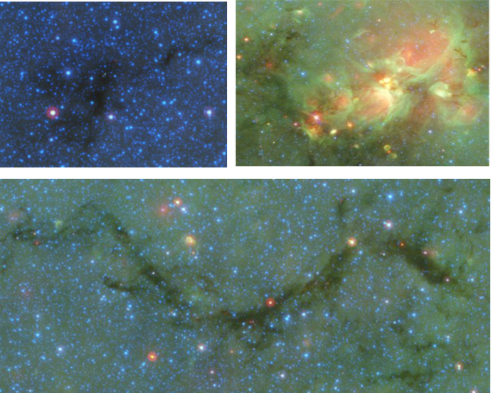

![]()
Basado en el trabajo (Abreu-Vicente et al. 2015)
La relación entre formación estelar y densidad en nubes moleculares
Las estrellas nacen en las regiones más frías y densas de las nubes moleculares, que son a su vez la estructura predominante que llena el espacio entre estrellas (el medio interestelar). Esto es un hecho empírico, comprobado por numerosos trabajos que se extienden en décadas de estudio.
Las nubes moleculares generan estrellas que, a su vez, modifican el material del que fueron creadas para enviarlo de vuelta al medio interestelar, que formará nuevas estrellas reciclando así el material de las mismas. Por esta razón, las nubes moleculares tienen un papel principal en la evolución galáctica. Es por ello que el estudio de la evolución de nubes moleculares es de gran interés para la comunidad científica.
No sólo las estrellas se forman de material reciclado de previas generaciones, sino que todos los átomos de toda la materia que ves en La Tierra (incluidos tu y yo) han formado en algún momento de la historia del Universo parte de una estrella y posteriormente se han encontrado a temperaturas inferiores a los 200 bajo cero, en la nube molecular en que nuestro Sol se formó.
La estructura interna de las nubes moleculares se puede usar para inferir los procesos físicos que actúan sobre ellas (Hennebelle y Falgarone 2012). Las observaciones muestran que las nubes moleculares están formadas por una serie de núcleos densos, envueltos normalmente en una estructuras filamentarias de densidad ligeramente menor Jorge Abreu-Vicente (2023). Todo ello, envuelto en un material más difuso (menos denso) que domina la gran escala de las nubes moleculares. Los núcleos son los lugares en que tiene lugar la formación estelar. Tienen tamaños que rondan el medio año luz, masas entre 0.1 y 1000 veces la del Sol y temperaturas en torno a los 250 - 260 grados centígrados bajo cero.
La necesidad de un estudio sistemático de nubes moleculares
Las principales diferencias entre estos núcleos, filamentos y material difuso son sus densidades (mayor en núcleos y menor en zonas difusas) y sus temperaturas, que crecen en forma inversa a su densidad. La distribución de densidad de dichos elementos y de las nubes moleculares como un todo se puede usar para estudiar los procesos físicos que actúan sobre ellas, así como la relativa importancia de los mismos. En el trabajo presentado en este post, hacemos el primer estudio sistemático de distribución de densidades en nubes moleculares a través de la Vía Láctea.
Anterior a este trabajo, sólo la distribución de densidades de nubes moleculares en la vecindad solar ( un círculo de unos 3000 años luz de diámetro con el Sol en su centro) había sido profundamente estudiada Kainulainen y Tan (2013). Las razones son principalmente limitaciones técnicas en los métodos de medida de densidad (para más detalles, Abreu-Vicente et al. 2015). El problema de las nubes moleculares en la vecindad solar es que no son representativas de las nubes moleculares existentes por regla general en la Vía Láctea, por lo que no podemos generalizar los resultados encontrados. Para dar una idea, las nubes moleculares en nuestro entorno forman muy pocas estrellas, principalmente de baja masa, y tienen masas de unas 1000 veces la solar []. La nube molecular media en nuestra Galaxia tiene gran actividad de formación estelar de alta y baja masa y masas de entre cien mil y un millón soles.
Por estas razones, el objetivo de este trabajo es obtener el primer estudio sistemático de la relación entre distribución de densidad en nubes moleculares y formación estelar a escalas galácticas. De esta forma, podríamos finalmente extrapolar los resultados a un escenario más general. Con estos resultados podremos poner a prueba los paradigmas teóricos actuales sobre los procesos que generan la formación estelar. Los escenarios más concretos son: gravedad, turbulencia y, en menor medida, campos magnéticos.
Los trabajos anteriores muestran que la distribución de densidad en nubes moleculares con y sin actividad de formación estelar son fundamentalmente diferentes Schneider et al. (2013). Las nubes moleculares con formación estelar muestran mayores cantidades de material concentrado en zonas densas. Esto se puede ver en la Figura 1, en la que las nubes sin formación estelar activa (quiescent en inglés) tienen una distribución de densidades de forma log-normal, mientras que las nubes activas, como Tauro, muestran un claro exceso de material sobre la línea log-normal (en sólido) en la zona derecha de la gráfica que representa regiones densas.
Lo interesante de estos resultados se centra en la forma analítica de las funciones. Las simulaciones teóricas muestran que una nube molecular en la que la turbulencia del gas es el principal proceso físico evoluciona de forma en que su distribución de densidades sigue una función log-normal Lombardi, Alves, y Lada (2015). Por el contrario, nubes moleculares dominadas por gravedad tienen una distribución exponencial, similar a la “línea recta” mostrada por Lupus a altas densidades. Estos resultados sugieren que, al menos en las nubes cercanas al sol: la turbulencia domina la evolución de nubes moleculares sin formación estelar, mientras que la gravedad es el proceso dominante en las nubes con fomación estelar.

Observar nubes moleculares en distintos estados evolutivos revela los procesos físicos que dominan la evolución
En este trabajo, definimos tres tipos de nubes moleculares basándonos en su actividad de formación estelar: nubes tranquilas (sin formación), nubes en activa formación y regiones HII. Las últimas, son nubes en las que la formación estelar ha tendo lugar durante los últimos pocos millones de años. En ellas, las nuevas estrellas, mediante su radiación ultravioleta, han ionizado y deformado por completo a sus nubes madre.
Es importante hacer notar que la elección de tipos de nubes moleculares en este trabajo está justificada por su lógica (aunque no confirmada observacionalmente, pues requeriría al menos un millón de años de espera) secuencia evolutiva: las nubes están primero en un estado tranquilo, para luego comenzar a formar estrellas, hasta que estrellas masivas se forman y con su radiación de etapas tempranas disuelven la nube molecular. En el artículo se discuten en profundidad las posibles explicaciones y escepciones de dicha secuencia evolutiva. En la Figura 2 mostramos un ejemplo de cada uno de estos objetos.

Los resultados de nuestro trabajo muestran que las nubes moleculares galácticas muestran una distribución de densidades similar a las de la vecindad solar en función de su actividad de fundación estelar. Las nubes tranquilas siguen una función log-normal. Las nubes con formación estelar activa muestran exceso de gas en regiones densas comparado con la log-normal. Finalmente, las regiones HII están dominadas por un componente exponencial en practicamente su totalidad.
Tras este resultado, la cuestión que vino a la mente fue la siguiente: Asumamos que nuestros tres tipos de nubes muestran siguen un proceso evolutivo secuencial. En otras palabras, toda nube molecular evolucionará de tranquila a HII, pasando por el estado intermedio. Y los resultados muestran un incremento paulatino del gas denso en dicha secuencia. Podríamos usar la cantidad de gas denso de una nube molecular para determinar su edad basándonos en su distribución de densidades?
Y la respuesta resultó ser que sí se puede. Las simulaciones muestran que en una nube dominada por la gravedad, el punto en que su distribución de densidades se desvía de la función log-normal está directamente relacionado con la edad de la nube (Girichidis et al. 2014). O al menos la edad desde que la gravedad comenzó a dominar ciertas regiones de la nube. Tras llevar a cabo rigurosos cálculos, llegamos a la conclusión de que la media de edad de nuestras nubes tranquilas es de cien mil años, las nubes con formación estelar tienen una media de edad de medio millón de años, mientras que las regiones HII tendrían unos 2 años de edad de media. Dichos valores son remarcablemente similares a estimaciones hechas con métodos totalmente independientes para núcleos de formación, protoestrellas y estrellas masivas, que son los elementos principales de nuestras tres regiones. Este hecho da una solidez importante a nuestro descubrimiento. Por tanto, podemos afirmar que existe una relación entre la formación estelar, la distribución de densidad y la evolución de las nubes moleculares, y que ésta es vista en nubes esparcidas por todo el plano galáctico.
Nuestro trabajo sugiere el siguiente marco teórico para la evolución de nubes moleculares y formación estelar: en sus primeros cien mil años, las nubes moleculares se hallan en un estado dominado por turbulencia. En un determinado momento, la turbulencia generará zonas de gas con mayor densidad que sus alrededores. Estas regiones se convertirán en auto gravitatorias y comenzarán el colapso hacia la formación estelar, mientras el resto de la nube continúa en un estado dominado por la turbulencia. Este proceso continuará y paulatinamente se generarán más y más zonas de autogravitación. Evenualmente se generarán estrellas masivas que en su juventud disolverán la nube madre. Por lo tanto, vemos que la turbulencia y la gravedad se turnan durante la vida de una nube molecular. Sin embargo, es últimamente la gravedad la causante de la formación estelar.
Referencias
Cómo citar
@online{jorge abreu-vicente2023,
author = {Jorge Abreu-Vicente, Dr.},
title = {Revelando el causante de la formación estelar},
date = {2023-10-31},
url = {https://drAbreu.github.io/es/posts/2023-10-31-revelando-causa-formacion-estelar/},
langid = {es}
}